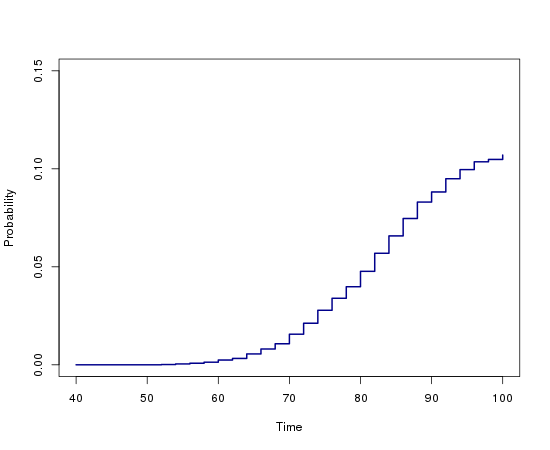
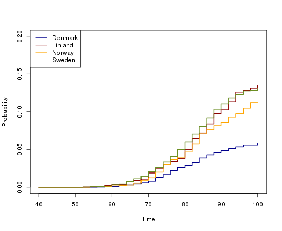
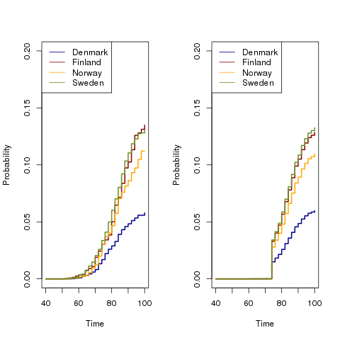
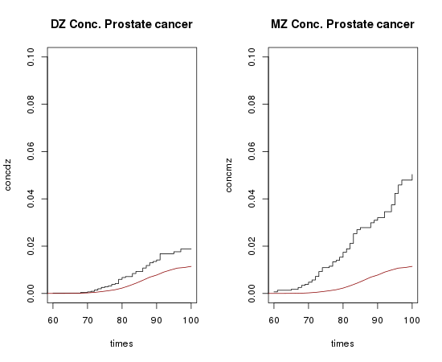
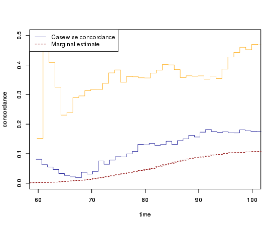
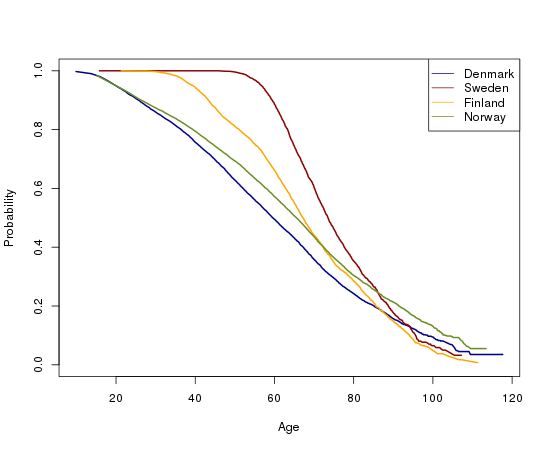
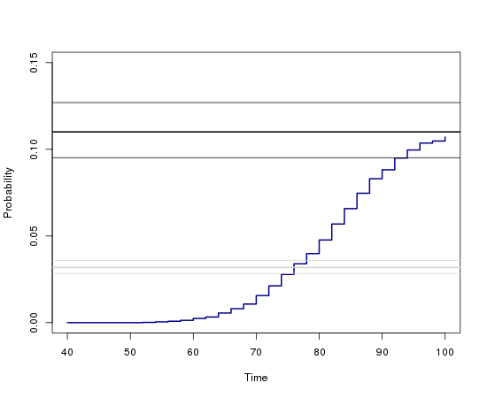
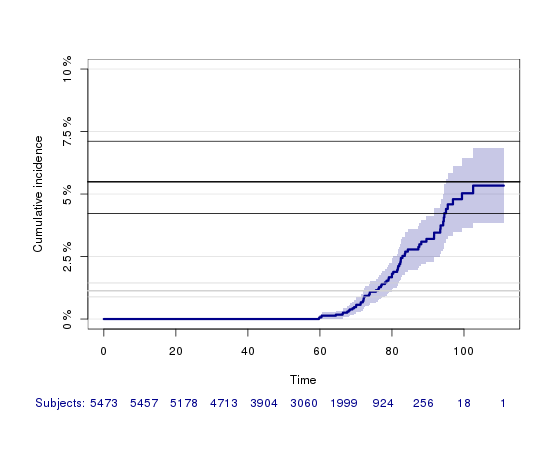

Analyzing twin data with 'mets'
Table of Contents
Installation
Install dependencies (R>=2.15) :
install.packages(c("mets","cmprsk"), dependencies=TRUE)
OBS: At this point you might have to restart R to flush the cache
of previously installed versions of the packages. If you have
previously installed timereg and lava, make sure that you have the
current versions installed (timereg: 1.7.5, lava: 1.2.1).
Load simulated data
library(mets)
The dataset prt contains (simulated) observations on prostate cancer
with the following columns
-
country - Country (Denmark,Finland,Norway,Sweden)
-
time - exit time (censoring,death or prostate cancer)
-
status - Status (censoring=0,death=1 or prostate cancer=2)
-
zyg - Zygosity (DZ,MZ)
-
id - Twin id number
-
cancer - cancer indicator (status=2)
data(prt) head(prt)
country time status zyg id cancer 31 Denmark 96.98833 1 DZ 1 0 32 Denmark 80.88885 1 DZ 1 0 39 Denmark 68.04498 1 DZ 3 0 40 Denmark 61.45903 1 DZ 3 0 51 Denmark 78.78068 1 DZ 5 0 52 Denmark 90.36252 1 DZ 5 0
Status table
prtwide <- fast.reshape(prt,id="id") ftable(status1~status2,prtwide)
status1 0 1 2
status2
0 9278 883 156
1 936 2308 193
2 163 199 106
Estimation of cumulative incidence
times <- seq(40,100,by=2) cifmod <- comp.risk(Surv(time,status>0)~+1+cluster(id),data=prt, prt$status,causeS=2,n.sim=0, times=times,conservative=1,max.clust=NULL,model="fg") theta.des <- model.matrix(~-1+factor(zyg),data=prt) ## design for MZ/DZ status or1 <- or.cif(cifmod,data=prt,cause1=2,cause2=2,theta.des=theta.des, score.method="fisher.scoring",same.cens=TRUE) summary(or1) or1$score
OR for dependence for competing risks
OR of cumulative incidence for cause1= 2 and cause2= 2
log-ratio Coef. SE z P-val Ratio SE
factor(zyg)DZ 0.785 0.221 3.55 3.82e-04 2.19 0.485
factor(zyg)MZ 2.100 0.278 7.56 4.11e-14 8.14 2.260
[,1]
[1,] -1.757285e-09
[2,] 5.951317e-08
pcif <- predict(cifmod,X=1,resample.iid=0,uniform=0,se=0)
plot(pcif,multiple=1,se=0,uniform=0,ylim=c(0,0.15))

Assumes that the censoring of the two twins are independent (when they are the same):
incorrect.or1 <- or.cif(cifmod,data=prt,cause1=2,cause2=2,theta.des=theta.des, theta=c(2.8,8.6),score.method="fisher.scoring") summary(incorrect.or1) ## not bad incorrect.or1$score
OR for dependence for competing risks
OR of cumulative incidence for cause1= 2 and cause2= 2
log-ratio Coef. SE z P-val Ratio SE
factor(zyg)DZ 2.84 0.469 6.06 1.37e-09 17.1 8.04
factor(zyg)MZ 8.61 5.820 1.48 1.39e-01 5480.0 31900.00
[,1]
[1,] 1.969733e-08
[2,] 6.030127e-08
Correcting for country
table(prt$country) times <- seq(40,100,by=2) cifmodl <-comp.risk(Surv(time,status>0)~-1+factor(country)+cluster(id),data=prt, prt$status,causeS=2,n.sim=0,times=times,conservative=1, max.clust=NULL,cens.model="aalen") pcifl <- predict(cifmodl,X=diag(4),se=0,uniform=0) plot(pcifl,multiple=1,se=0,uniform=0,col=1:4,ylim=c(0,0.2)) legend("topleft",levels(prt$country),col=1:4,lty=1)

Design for MZ/DZ status
theta.des <- model.matrix(~-1+factor(zyg),data=prt) or.country <- or.cif(cifmodl,data=prt,cause1=2,cause2=2,theta.des=theta.des, theta=c(0.8,2.1),score.method="fisher.scoring",same.cens=TRUE) summary(or.country)
OR for dependence for competing risks
OR of cumulative incidence for cause1= 2 and cause2= 2
log-ratio Coef. SE z P-val Ratio SE
factor(zyg)DZ 0.736 0.234 3.15 1.66e-03 2.09 0.488
factor(zyg)MZ 1.860 0.279 6.67 2.54e-11 6.44 1.800
Advanced modelling (Extra)
cifmodlr <- comp.risk(Surv(time,status>0)~+1+const(factor(country))+cluster(id), data=prt, prt$status, causeS=2, n.sim=0, times=times,conservative=1,max.clust=NULL,model="fg", cens.model="aalen",cens.formula=~factor(country)) pciflr <- predict(cifmodlr,X=rep(1,4), Z=rbind(c(0,0,0),c(1,0,0),c(0,1,0),c(0,0,1)), se=0,uniform=0)
par(mfrow=c(1,2)) plot(pcifl,multiple=1,se=0,uniform=0,col=1:4,ylim=c(0,0.2)) legend("topleft",levels(prt$country),col=1:4,lty=1) plot(pciflr,multiple=1,se=0,uniform=0,col=1:4,ylim=c(0,0.2)) legend("topleft",levels(prt$country),col=1:4,lty=1)

or.countryr <- or.cif(cifmodlr,data=prt,cause1=2,cause2=2,theta.des=theta.des, theta=c(0.8,2.1),score.method="fisher.scoring",same.cens=TRUE) summary(or.countryr)
OR for dependence for competing risks
OR of cumulative incidence for cause1= 2 and cause2= 2
log-ratio Coef. SE z P-val Ratio SE
factor(zyg)DZ 0.738 0.233 3.16 1.55e-03 2.09 0.488
factor(zyg)MZ 1.860 0.279 6.67 2.57e-11 6.42 1.790
Concordance estimation
Ignoring country. Computing casewise, using prodlim. CIF:
outm <- prodlim(Hist(time,status)~+1,data=prt) times <- 60:100 ## cause is 2 (second cause) cifmz <- predict(outm,cause=2,time=times,newdata=data.frame(zyg="MZ")) cifdz <- predict(outm,cause=2,time=times,newdata=data.frame(zyg="DZ"))
### casewise pp33 <- bicomprisk(Hist(time,status)~strata(zyg)+id(id),data=prt,cause=c(2,2),prodlim=TRUE) pp33dz <- pp33$model$"DZ" pp33mz <- pp33$model$"MZ"
par(mfrow=c(1,2)) plot(pp33dz,ylim=c(0,0.1),atrisk=FALSE) lines(pcif$time,pcif$P1^2,col=2) title(main="DZ Conc. Prostate cancer") plot(pp33mz,ylim=c(0,0.1),atrisk=FALSE) title(main="MZ Conc. Prostate cancer") lines(pcif$time,pcif$P1^2,col=2)

par(mfrow=c(1,1)) cdz <- casewise(pp33dz,outm,cause.marg=2) cmz <- casewise(pp33mz,outm,cause.marg=2) plot(cmz,ci=NULL,ylim=c(0,0.5),xlim=c(60,100),legend=TRUE,col=c(3,2,1)) par(new=TRUE) plot(cdz,ci=NULL,ylim=c(0,0.5),xlim=c(60,100),legend=TRUE)

Similar analyses using comp.risk for competing risks
leads to tests for equal concordance and more correct standard
errors
p33 <- bicomprisk(Hist(time,status)~strata(zyg)+id(id),data=prt,cause=c(2,2),return.data=1) p33dz <- p33$model$"DZ"$comp.risk p33mz <- p33$model$"MZ"$comp.risk
head(cbind(p33mz$time, p33mz$P1, p33mz$se.P1)) head(cbind(p33dz$time, p33dz$P1, p33dz$se.P1))
[,1] [,2] [,3]
[1,] 60.88384 0.001354486 0.0006759148
[2,] 64.98252 0.001738665 0.0007767791
[3,] 66.34227 0.002145175 0.0008759241
[4,] 67.23626 0.002553690 0.0009656368
[5,] 67.96152 0.002980112 0.0010544136
[6,] 68.37310 0.003852670 0.0012192761
[,1] [,2] [,3]
[1,] 58.85519 0.0001741916 0.0001740997
[2,] 67.87387 0.0004044091 0.0002883926
[3,] 69.55123 0.0006488647 0.0003777479
[4,] 70.83183 0.0009069944 0.0004570724
[5,] 71.05738 0.0011672691 0.0005255212
[6,] 71.06602 0.0014276382 0.0005859026
Test for genetic effect, needs other form of bicomprisk with iid decomp
conc1 <- p33dz conc2 <- p33mz test.conc(p33dz,p33mz);
$test
cum dif. sd z pval
pepe-mori 0.3937372 0.09841628 4.000732 6.31468e-05
$mintime
[1] 60.88384
$maxtime
[1] 96.92463
$same.cluster
[1] FALSE
attr(,"class")
[1] "testconc"
OR expression of difference in concordance functions and Gray test
data33mz <- p33$model$"MZ"$data data33mz$zyg <- 1 data33dz <- p33$model$"DZ"$data data33dz$zyg <- 0 data33 <- rbind(data33mz,data33dz) library(cmprsk) ftime <- data33$time fstatus <- data33$status table(fstatus)
fstatus 0 1 2 9597 106 4519
group <- data33$zyg graytest <- cuminc(ftime,fstatus,group) graytest
Tests:
stat pv df
1 28.82416 7.925617e-08 1
2 33.79236 6.131919e-09 1
Estimates and Variances:
$est
20 40 60 80 100
0 1 0.0000000000 0.00000000 0.0001741916 0.006741025 0.01880244
1 1 0.0000000000 0.00000000 0.0006710172 0.017420360 0.05031415
0 2 0.0006970762 0.01974882 0.1141800067 0.504364854 0.93797293
1 2 0.0009363302 0.01655314 0.0948098327 0.443996722 0.90692430
$var
20 40 60 80 100
0 1 0.000000e+00 0.000000e+00 3.034323e-08 2.115863e-06 9.493584e-06
1 1 0.000000e+00 0.000000e+00 2.250627e-07 9.173278e-06 5.102841e-05
0 2 8.094463e-08 2.487399e-06 1.556735e-05 6.990685e-05 4.769058e-05
1 2 1.752378e-07 3.424511e-06 2.388136e-05 1.271394e-04 1.171775e-04
zygeffect <- comp.risk(Surv(time,status==0)~const(zyg), data=data33,data33$status,causeS=1, cens.model="aalen",model="logistic",conservative=1) summary(zygeffect)
Competing risks Model
Test for nonparametric terms
Test for non-significant effects
Supremum-test of significance p-value H_0: B(t)=0
(Intercept) 26.8 0
Test for time invariant effects
Kolmogorov-Smirnov test p-value H_0:constant effect
(Intercept) 2.22 0
Cramer von Mises test p-value H_0:constant effect
(Intercept) 36.3 0
Parametric terms :
Coef. SE Robust SE z P-val
const(zyg) 0.944 0.218 0.218 4.34 1.45e-05
Call:
comp.risk(Surv(time, status == 0) ~ const(zyg), data = data33,
data33$status, causeS = 1, cens.model = "aalen", model = "logistic",
conservative = 1)
Adjusting for country…
p33l <- bicomprisk(Hist(time,status)~country+strata(zyg)+id(id),
data=prt,cause=c(2,2),return.data=1,robust=1)
Liability model, ignoring censoring
(M <- with(prt, table(cancer,zyg)))
Strata 'DZ'
Strata 'MZ'
zyg
cancer DZ MZ
0 17408 10872
1 583 359
coef(lm(cancer~-1+zyg,prt))
zygDZ zygMZ
0.03240509 0.03196510
Saturated model
bpmz <- biprobit(cancer~1 + cluster(id), data=subset(prt,zyg=="MZ"), eqmarg=TRUE) logLik(bpmz) # Log-likelihood AIC(bpmz) # AIC coef(bpmz) # Parameter estimates vcov(bpmz) # Asymptotic covariance summary(bpmz) # concordance, case-wise, tetrachoric correlations, ...
'log Lik.' -1472.972 (df=2)
[1] 2949.943
(Intercept) atanh(rho)
-1.8539454 0.8756506
(Intercept) atanh(rho)
(Intercept) 0.0007089726 0.0003033296
atanh(rho) 0.0003033296 0.0044023587
Estimate Std.Err Z p-value
(Intercept) -1.853945 0.026627 -69.627727 0
atanh(rho) 0.875651 0.066350 13.197393 0
n pairs
11231 5473
Score: -3.458e-05 5.111e-06
logLik: -1472.972
Variance of latent residual term = 1 (standard probit link)
Estimate 2.5% 97.5%
Tetrachoric correlation 0.70423 0.63252 0.76398
Concordance 0.01131 0.00886 0.01443
Case-wise/Conditional 0.35487 0.29391 0.42094
Marginal 0.03187 0.02834 0.03583
bp0 <- biprobit(cancer~1 + cluster(id)+strata(zyg), data=prt)
summary(bp0)
------------------------------------------------------------
Strata 'DZ'
Estimate Std.Err Z p-value
(Intercept) -1.846841 0.019247 -95.955243 0
atanh(rho) 0.418065 0.050421 8.291446 0
n pairs
17991 8749
Score: -0.001843 -0.0006883
logLik: -2536.242
Variance of latent residual term = 1 (standard probit link)
Estimate 2.5% 97.5%
Tetrachoric correlation 0.39530 0.30882 0.47529
Concordance 0.00486 0.00361 0.00655
Case-wise/Conditional 0.15019 0.11459 0.19443
Marginal 0.03239 0.02976 0.03523
------------------------------------------------------------
Strata 'MZ'
Estimate Std.Err Z p-value
(Intercept) -1.853945 0.026627 -69.627727 0
atanh(rho) 0.875651 0.066350 13.197393 0
n pairs
11231 5473
Score: -3.458e-05 5.111e-06
logLik: -1472.972
Variance of latent residual term = 1 (standard probit link)
Estimate 2.5% 97.5%
Tetrachoric correlation 0.70423 0.63252 0.76398
Concordance 0.01131 0.00886 0.01443
Case-wise/Conditional 0.35487 0.29391 0.42094
Marginal 0.03187 0.02834 0.03583
Equal marginals MZ/DZ
bp1 <- bptwin(cancer~1,zyg="zyg",DZ="DZ",id="id",type="u",data=prt) (s <- summary(bp1))
Estimate Std.Err Z p-value
(Intercept) -1.849284 0.015601 -118.539777 0
atanh(rho) MZ 0.877667 0.065815 13.335456 0
atanh(rho) DZ 0.417475 0.050276 8.303615 0
MZ/DZ Complete pairs MZ/DZ
11231/17991 5473/8749
Estimate 2.5% 97.5%
Tetrachoric correlation MZ 0.70525 0.63436 0.76438
Tetrachoric correlation DZ 0.39480 0.30854 0.47462
MZ:
Estimate 2.5% 97.5%
Concordance 0.01149 0.00942 0.01400
Casewise Concordance 0.35672 0.29764 0.42049
Marginal 0.03221 0.03007 0.03449
DZ:
Estimate 2.5% 97.5%
Concordance 0.00482 0.00363 0.00640
Casewise Concordance 0.14956 0.11441 0.19315
Marginal 0.03221 0.03007 0.03449
Estimate 2.5% 97.5%
Broad-sense heritability 0.62090 0.40145 0.79997
Components (concordance,cor,…) can be extracted from returned list
s$all
Estimate 2.5% 97.5%
Broad-sense heritability 0.620895137 0.401451306 0.799972156
Tetrachoric correlation MZ 0.705248651 0.634356556 0.764377527
Tetrachoric correlation DZ 0.394801083 0.308543835 0.474618270
MZ Concordance 0.011489241 0.009421632 0.014004180
MZ Casewise Concordance 0.356715710 0.297643971 0.420492283
MZ Marginal 0.032208397 0.030073567 0.034489384
DZ Concordance 0.004817009 0.003625030 0.006398416
DZ Casewise Concordance 0.149557552 0.114405843 0.193154114
DZ Marginal 0.032208397 0.030073567 0.034489384
Likelihood Ratio Test
compare(bp0,bp1)
- Likelihood ratio test -
data:
chisq = 0.0468, df = 1, p-value = 0.8288
sample estimates:
log likelihood (model 1) log likelihood (model 2)
-4009.213 -4009.237
Polygenic Libability model via te bptwin function (type can be a
subset of "acde", or "flex" for stratitified, "u" for random effects
model with same marginals for MZ and DZ)
bp2 <- bptwin(cancer~1,zyg="zyg",DZ="DZ",id="id",type="ace",data=prt) summary(bp2)
Estimate Std.Err Z p-value
(Intercept) -3.40624 0.19032 -17.89736 0.0000
log(var(A)) 0.74503 0.25710 2.89787 0.0038
log(var(C)) -1.25112 1.04238 -1.20024 0.2300
MZ/DZ Complete pairs MZ/DZ
11231/17991 5473/8749
Estimate 2.5% 97.5%
A 0.62090 0.40145 0.79997
C 0.08435 0.00910 0.48028
E 0.29475 0.23428 0.36343
MZ Tetrachoric Cor 0.70525 0.63436 0.76438
DZ Tetrachoric Cor 0.39480 0.30854 0.47462
MZ:
Estimate 2.5% 97.5%
Concordance 0.01149 0.00942 0.01400
Casewise Concordance 0.35672 0.29764 0.42049
Marginal 0.03221 0.03007 0.03449
DZ:
Estimate 2.5% 97.5%
Concordance 0.00482 0.00363 0.00640
Casewise Concordance 0.14956 0.11441 0.19315
Marginal 0.03221 0.03007 0.03449
Estimate 2.5% 97.5%
Broad-sense heritability 0.62090 0.40145 0.79997
Liability model, Inverse Probability Weighting
Probability weights based on Aalen's additive model
prtw <- ipw(Surv(time,status==0)~country, data=prt, cluster="id",weightname="w") plot(0,type="n",xlim=range(prtw$time),ylim=c(0,1),xlab="Age",ylab="Probability") count <- 0 for (l in unique(prtw$country)) { count <- count+1 prtw <- prtw[order(prtw$time),] with(subset(prtw,country==l), lines(time,w,col=count,lwd=2)) } legend("topright",legend=unique(prtw$country),col=1:4,pch=-1,lty=1)

bpmzIPW <- biprobit(cancer~1 + cluster(id), data=subset(prtw,zyg=="MZ"), weight="w") (smz <- summary(bpmzIPW))
Estimate Std.Err Z p-value
(Intercept) -1.226276 0.043074 -28.469378 0
atanh(rho) 0.912670 0.100316 9.097911 0
n pairs
2722 997
Score: 3.336e-05 -2.25e-05
logLik: -6703.246
Variance of latent residual term = 1 (standard probit link)
Estimate 2.5% 97.5%
Tetrachoric correlation 0.72241 0.61446 0.80381
Concordance 0.05490 0.04221 0.07113
Case-wise/Conditional 0.49887 0.41321 0.58460
Marginal 0.11005 0.09514 0.12696
Comparison with CIF
plot(pcif,multiple=1,se=1,uniform=0,ylim=c(0,0.15)) abline(h=smz$prob["Marginal",],lwd=c(2,1,1)) ## Wrong estimates: abline(h=summary(bpmz)$prob["Marginal",],lwd=c(2,1,1),col="lightgray")

Concordance estimates
plot(pp33mz,ylim=c(0,0.1)) abline(h=smz$prob["Concordance",],lwd=c(2,1,1)) ## Wrong estimates: abline(h=summary(bpmz)$prob["Concordance",],lwd=c(2,1,1),col="lightgray")

ACE model with IPW
bp3 <- bptwin(cancer~1,zyg="zyg",DZ="DZ",id="id", type="ace",data=prtw,weight="w") summary(bp3)
Estimate Std.Err Z p-value
(Intercept) -2.31618 0.18673 -12.40359 0e+00
log(var(A)) 0.85390 0.22689 3.76347 2e-04
log(var(C)) -28.07632 1.46786 -19.12734 0e+00
MZ/DZ Complete pairs MZ/DZ
4716/8835 997/1809
Estimate 2.5% 97.5%
A 0.70138 0.60090 0.78560
C 0.00000 NaN NaN
E 0.29862 0.21440 0.39910
MZ Tetrachoric Cor 0.70138 0.59586 0.78310
DZ Tetrachoric Cor 0.35069 0.30328 0.39637
MZ:
Estimate 2.5% 97.5%
Concordance 0.04857 0.03963 0.05940
Casewise Concordance 0.47238 0.39356 0.55260
Marginal 0.10281 0.09463 0.11161
DZ:
Estimate 2.5% 97.5%
Concordance 0.02515 0.02131 0.02965
Casewise Concordance 0.24461 0.21892 0.27226
Marginal 0.10281 0.09463 0.11161
Estimate 2.5% 97.5%
Broad-sense heritability 0.70138 0.60090 0.78560
Equal marginals but free variance structure between MZ and DZ
bp4 <- bptwin(cancer~1,zyg="zyg",DZ="DZ",id="id", type="u",data=prtw,weight="w") summary(bp4)
Estimate Std.Err Z p-value
(Intercept) -1.266427 0.024091 -52.568381 0
atanh(rho) MZ 0.898548 0.098841 9.090866 0
atanh(rho) DZ 0.312574 0.073668 4.243006 0
MZ/DZ Complete pairs MZ/DZ
4716/8835 997/1809
Estimate 2.5% 97.5%
Tetrachoric correlation MZ 0.71559 0.60742 0.79771
Tetrachoric correlation DZ 0.30278 0.16662 0.42760
MZ:
Estimate 2.5% 97.5%
Concordance 0.04974 0.04044 0.06104
Casewise Concordance 0.48442 0.40185 0.56785
Marginal 0.10268 0.09453 0.11144
DZ:
Estimate 2.5% 97.5%
Concordance 0.02269 0.01667 0.03081
Casewise Concordance 0.22097 0.16448 0.29013
Marginal 0.10268 0.09453 0.11144
Estimate 2.5% 97.5%
Broad-sense heritability 0.82563 0.33329 0.97819
Check convergence
mean(score(bp4)^2)
[1] 2.723861e-14
Liability model, adjusting for covariates
Main effect of country
bp6 <- bptwin(cancer~country,zyg="zyg",DZ="DZ",id="id", type="ace",data=prtw,weight="w") summary(bp6)
Estimate Std.Err Z p-value
(Intercept) -2.81553 0.23889 -11.78590 0e+00
countryFinland 0.87558 0.16123 5.43061 0e+00
countryNorway 0.68483 0.17762 3.85567 1e-04
countrySweden 0.77248 0.12350 6.25468 0e+00
log(var(A)) 0.77724 0.23186 3.35220 8e-04
log(var(C)) -28.96268 3.43308 -8.43636 0e+00
MZ/DZ Complete pairs MZ/DZ
4716/8835 997/1809
Estimate 2.5% 97.5%
A 0.68509 0.58001 0.77411
C 0.00000 NaN NaN
E 0.31491 0.22589 0.41999
MZ Tetrachoric Cor 0.68509 0.57428 0.77124
DZ Tetrachoric Cor 0.34254 0.29262 0.39060
MZ:
Estimate 2.5% 97.5%
Concordance 0.02236 0.01588 0.03141
Casewise Concordance 0.39194 0.30778 0.48305
Marginal 0.05705 0.04654 0.06977
DZ:
Estimate 2.5% 97.5%
Concordance 0.00989 0.00700 0.01394
Casewise Concordance 0.17329 0.14505 0.20570
Marginal 0.05705 0.04654 0.06977
Estimate 2.5% 97.5%
Broad-sense heritability 0.68509 0.58001 0.77411
bp7 <- bptwin(cancer~country,zyg="zyg",DZ="DZ",id="id", type="u",data=prtw,weight="w") summary(bp7)
Estimate Std.Err Z p-value
(Intercept) -1.581478 0.051318 -30.817031 0e+00
countryFinland 0.491725 0.081517 6.032155 0e+00
countryNorway 0.385830 0.094254 4.093497 0e+00
countrySweden 0.433789 0.060648 7.152599 0e+00
atanh(rho) MZ 0.884166 0.099366 8.898114 0e+00
atanh(rho) DZ 0.271770 0.073240 3.710668 2e-04
MZ/DZ Complete pairs MZ/DZ
4716/8835 997/1809
Estimate 2.5% 97.5%
Tetrachoric correlation MZ 0.70850 0.59760 0.79280
Tetrachoric correlation DZ 0.26527 0.12752 0.39298
MZ:
Estimate 2.5% 97.5%
Concordance 0.02347 0.01664 0.03300
Casewise Concordance 0.41255 0.32395 0.50721
Marginal 0.05688 0.04643 0.06953
DZ:
Estimate 2.5% 97.5%
Concordance 0.00794 0.00489 0.01287
Casewise Concordance 0.13966 0.09312 0.20421
Marginal 0.05688 0.04643 0.06953
Estimate 2.5% 97.5%
Broad-sense heritability 0.88646 0.22665 0.99521
Stratified analysis
bp8 <- bptwin(cancer~strata(country),zyg="zyg",DZ="DZ",id="id", type="u",data=prtw,weight="w")
summary(bp8)
Strata 'Denmark'
Strata 'Finland'
Strata 'Norway'
Strata 'Sweden'
------------------------------------------------------------
Strata 'Denmark'
Estimate Std.Err Z p-value
(Intercept) -1.583608 0.051241 -30.904856 0.0000
atanh(rho) MZ 0.992896 0.217349 4.568215 0.0000
atanh(rho) DZ 0.070588 0.186956 0.377566 0.7058
MZ/DZ Complete pairs MZ/DZ
1334/2789 287/589
Estimate 2.5% 97.5%
Tetrachoric correlation MZ 0.75859 0.51308 0.88937
Tetrachoric correlation DZ 0.07047 -0.28750 0.41117
MZ:
Estimate 2.5% 97.5%
Concordance 0.02611 0.01584 0.04274
Casewise Concordance 0.46093 0.28426 0.64799
Marginal 0.05664 0.04623 0.06922
DZ:
Estimate 2.5% 97.5%
Concordance 0.00420 0.00110 0.01596
Casewise Concordance 0.07422 0.01888 0.25037
Marginal 0.05664 0.04623 0.06922
Estimate 2.5% 97.5%
Broad-sense heritability 1 NaN NaN
------------------------------------------------------------
Strata 'Finland'
Estimate Std.Err Z p-value
(Intercept) -1.087902 0.063221 -17.207912 0.0000
atanh(rho) MZ 0.859335 0.302752 2.838410 0.0045
atanh(rho) DZ 0.393145 0.179942 2.184840 0.0289
MZ/DZ Complete pairs MZ/DZ
660/1633 134/316
Estimate 2.5% 97.5%
Tetrachoric correlation MZ 0.69592 0.25985 0.89623
Tetrachoric correlation DZ 0.37407 0.04044 0.63265
MZ:
Estimate 2.5% 97.5%
Concordance 0.07008 0.03975 0.12064
Casewise Concordance 0.50666 0.27641 0.73412
Marginal 0.13832 0.11316 0.16801
DZ:
Estimate 2.5% 97.5%
Concordance 0.04160 0.02237 0.07607
Casewise Concordance 0.30073 0.16558 0.48242
Marginal 0.13832 0.11316 0.16801
Estimate 2.5% 97.5%
Broad-sense heritability 0.64369 0.04069 0.98717
------------------------------------------------------------
Strata 'Norway'
Estimate Std.Err Z p-value
(Intercept) -1.192293 0.079124 -15.068598 0.0000
atanh(rho) MZ 0.916471 0.301133 3.043409 0.0023
atanh(rho) DZ 0.533761 0.252070 2.117509 0.0342
MZ/DZ Complete pairs MZ/DZ
617/928 115/155
Estimate 2.5% 97.5%
Tetrachoric correlation MZ 0.72422 0.31516 0.90635
Tetrachoric correlation DZ 0.48825 0.03969 0.77303
MZ:
Estimate 2.5% 97.5%
Concordance 0.05918 0.03218 0.10633
Casewise Concordance 0.50764 0.27633 0.73572
Marginal 0.11657 0.08945 0.15057
DZ:
Estimate 2.5% 97.5%
Concordance 0.03945 0.01840 0.08257
Casewise Concordance 0.33842 0.15583 0.58636
Marginal 0.11657 0.08945 0.15057
Estimate 2.5% 97.5%
Broad-sense heritability 0.47195 0.01989 0.97522
------------------------------------------------------------
Strata 'Sweden'
Estimate Std.Err Z p-value
(Intercept) -1.149412 0.032155 -35.745836 0.0000
atanh(rho) MZ 0.836864 0.125476 6.669520 0.0000
atanh(rho) DZ 0.199677 0.092907 2.149202 0.0316
MZ/DZ Complete pairs MZ/DZ
2105/3485 461/749
Estimate 2.5% 97.5%
Tetrachoric correlation MZ 0.68414 0.53057 0.79423
Tetrachoric correlation DZ 0.19706 0.01758 0.36425
MZ:
Estimate 2.5% 97.5%
Concordance 0.06055 0.04659 0.07835
Casewise Concordance 0.48365 0.38001 0.58872
Marginal 0.12519 0.11277 0.13877
DZ:
Estimate 2.5% 97.5%
Concordance 0.02515 0.01672 0.03766
Casewise Concordance 0.20088 0.13541 0.28746
Marginal 0.12519 0.11277 0.13877
Estimate 2.5% 97.5%
Broad-sense heritability 0.97416 0.00000 1.00000
Wald test (stratified vs main effect)
B <- contr(3,4)[-(1:3),]
compare(bp8,contrast=B)
- Wald test -
Null Hypothesis:
[Denmark.atanh(rho) MZ] - [Finland.atanh(rho) MZ] = 0
[Denmark.atanh(rho) MZ] - [Norway.atanh(rho) MZ] = 0
[Denmark.atanh(rho) MZ] - [Sweden.atanh(rho) MZ] = 0
[Denmark.atanh(rho) DZ] - [Finland.atanh(rho) DZ] = 0
[Denmark.atanh(rho) DZ] - [Norway.atanh(rho) DZ] = 0
[Denmark.atanh(rho) DZ] - [Sweden.atanh(rho) DZ] = 0
Observed:
0.1336 0.07643 0.156 -0.3226 -0.4632 -0.1291
data:
chisq = 3.4972, df = 6, p-value = 0.7443